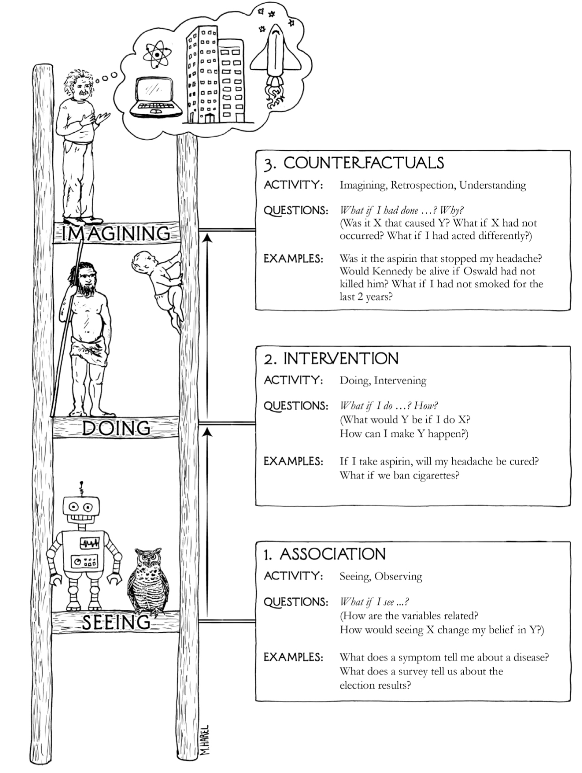
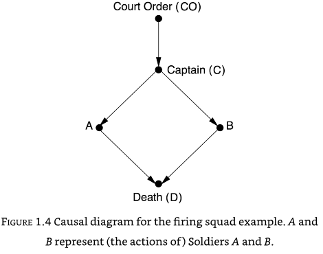
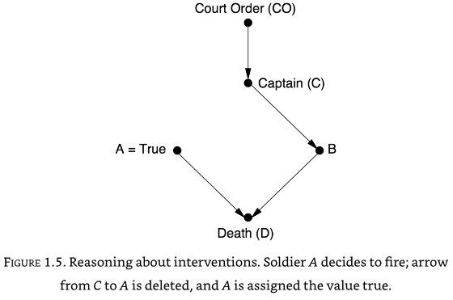
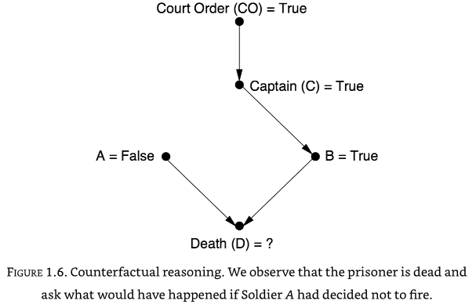

The ladder of causation#
“Probabilities, even conditional probabilities, alone encode our beliefs about a static observed world, causality tells us whether probabilities change when the world changes - be it by intervention or by act of imagination.”
Causal explanations make up the bulk of our knowledge.
Causal understanding allows us to manipulate our environment.
We can imagine ‘what if?’ counter-factual scenarios in a mental model that includes multiple variables.
Causal understanding involves seeing, doing (and learning from experience), and imagining.
Three levels of causation#

Association: Seeing. We look for patterns in the data. How are variables related? One event is associated with another if changing one (\(A\)) changes the likelihood of seeing another (\(B\)). We can write this as \(P(B|A)\) - what is the probability of seeing \(B\) given that we see \(A\). Machine learning works at this level. Predictions can be very accurate, but cannot go outside of the observed data.
Intervention: Doing/changing. “What happens if I do X?” Intervention can create new conditions not present in the original data, or can break existing associations in the data. If the existing data has all the necessary data, then a causal model allows us to use existing data to ask interventional questions - what is the probability of \(B\), of I do \(A\), or \(P(B|do(A))\). The accuracy of the answer will depend on the accuracy of the causal model. Related to this is asking how much do I need to change \(A\) to achieve \(B\). This rung of the ladder is restricted to the observed world.
Counterfactuals: Imagining hypothetical situations. Causal models, such as understanding physical laws, allows to ask “What if things had been different?” or “Why did X happen?” This rung of the ladder can allow us to go outside of the observed world.
The mini Turing test#
For a machine to pass a mini Turing test for causal inference, we would need to think how a machine can acquire causal knowledge:
How can machines (and people) represent causal knowledge in a way that would enable them to access the necessary information swiftly, answer questions correctly, and do it with ease.
For this we need a compact method of representing the causal knowledge. This can be done with a causal diagram, such as one for a firing squad:

From the causal diagram we can see that if A fires, then B must also have fired. But a causal diagram can be used to ask causal questions such as what would happen if A decided to fire by itself. In these causal questions, we break any connections to A:

In this case we can see D would die, but B would not fire. Even though in observed data A and B always fire together, in out causal ‘what if?’ scenario we can see that B firing is not dependent on A firing.
We can also answer the question “What if A decided not to fire - would D be alive or dead?”. The causal diagram shows that B by itself can cause D to die.

Probabilities and causation#
Conditional probabilities, such as \(P(Y|X)\) do not show or imply causation. For example parallel changes in \(X\) and \(Y\) may be caused by a confounder. A confounder is a common cause. If \(Z\) causes changes in both \(X\) and \(Y\), then \(X\) and \(Y\) will appear to have dependence on each other.
It is possible to eliminate confounders (also called background factors, \(K\)) by conditioning upon them: \(P(X|Y, K=k)\). The challenge, however, is knowing which background factors to condition upon; this cannot be derived from data alone as data alone does not show casual links, and confounding is a causal phenomenon. It has been suggested though that we should condition on any factor that is ‘causally relevant’.
To describe causal relationships we should use the do operator. We can say \(X\) causes \(Y\) if \(P(Y|do(X)) > P(Y)\).
YouTube#
Machine learning with ‘big data’: fundamental limitations and Pearl’s ‘ladder of causation’: https://youtu.be/-7vSiWRasxY
Judea Pearl: Causal Networks: https://youtu.be/ub98C4OUD0E